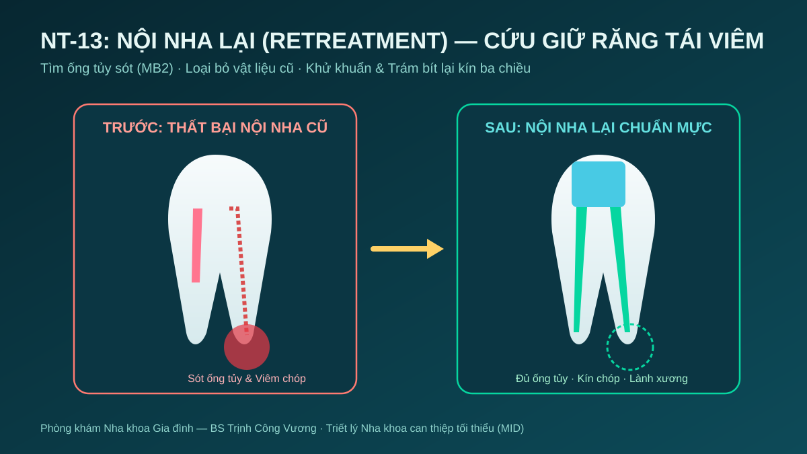

NT-13: Nội nha lại – Retreatment: Nguyên nhân thất bại, chỉ định và tiên lượng

Không ít cô bác đến phòng khám với tâm trạng buồn bã: "Bác sĩ ơi, chiếc răng hàm này tôi đã lấy tủy và bọc sứ mấy năm trước rồi, sao bây giờ lại nhức khi nhai, nổi mụn mủ ở lợi, có phải nhổ bỏ luôn không?" Trong rất nhiều trường hợp, câu trả lời là KHÔNG CẦN NHỔ. Nhờ Điều trị Nội nha lại (Non-surgical Endodontic Retreatment), bác sĩ có thể mở lại hệ thống ống tủy cũ, xử lý triệt để ổ vi khuẩn còn sót và cứu giữ lại chiếc răng thật cho cô bác thêm nhiều năm nữa.
1. Những nguyên nhân hàng đầu khiến ca nội nha cũ thất bại
Một chiếc răng đã lấy tủy vẫn có thể tái viêm quanh chóp do các nguyên nhân chính sau:
- Bỏ sót ống tủy giải phẫu: Ví dụ kinh điển nhất là ống tủy gần ngoài thứ hai (MB2) ở răng hàm lớn hàm trên hoặc ống tủy thứ hai ở răng cửa/răng tiền hàm dưới. Chỉ cần sót một ống tủy nhỏ chứa mô hoại tử, vi khuẩn sẽ tiếp tục gây viêm chóp.
- Làm sạch và trám bít chưa tới chóp hoặc thiếu đặc chắc: Chiều dài làm việc ngắn, bỏ sót 1–2 mm cuối chóp, hoặc khối trám bít bị rỗng xốp tạo chỗ trú ẩn cho vi khuẩn bền bỉ như Enterococcus faecalis.
- Hở vi kẽ thân răng (Coronal Leakage): Miếng trám bị bong vỡ, sâu tái phát dưới mão sứ hoặc chậm trễ bọc phục hồi khiến nước bọt thấm ngược xuống ống tủy.
- Lỗi kỹ thuật trước đó: Tạo khấc (ledge), gãy dụng cụ cản trở làm sạch vùng chóp, hoặc thủng sàn/thành chân răng chưa được bịt kín sinh học.
2. Chỉ định và Chống chỉ định của Nội nha lại
Chỉ định Nội nha lại (Không phẫu thuật):
- Răng đã điều trị tủy có tổn thương quanh chóp mới xuất hiện, kích thước tăng lên hoặc không lành thương kèm triệu chứng đau, sưng, lỗ rò.
- Răng có chất lượng trám bít cũ kém, ngắn, rỗng hoặc nghi ngờ sót ống tủy cần làm lại trước khi phục hình mão/cầu răng mới (dù chưa đau).
- Chân răng còn đủ mô lành vững chắc để phục hồi chức năng ăn nhai.
Khi nào KHÔNG nên cố Nội nha lại (Chống chỉ định tương đối/tuyệt đối):
- Răng bị nứt dọc chân răng (Vertical Root Fracture) — không thể hàn gắn khe nứt chạy dọc chân răng.
- Thân răng sâu vỡ quá sâu dưới mào xương ổ răng không còn đủ mô để tạo hiệu ứng ôm cổ (ferrule) phục hồi.
- Tiêu xương nha chu quá nặng làm răng lung lay độ III, mất nâng đỡ.
- Răng có chốt kim loại lớn gắn quá sâu không thể tháo an toàn mà không làm gãy chân răng (trong trường hợp này, có thể cân nhắc vi phẫu thuật cắt chóp và trám ngược MTA).
3. Quy trình và Tiên lượng của Nội nha lại
Nội nha lại đòi hỏi sự kiên nhẫn, kính phóng đại (lúp/kính hiển vi), phim 3D CBCT (khi cần truy tìm ống tủy sót) và bộ dụng cụ chuyên biệt (đầu siêu âm tháo chốt, dung môi hoặc trâm tháo Gutta-percha). Sau khi lấy sạch vật liệu cũ, vượt qua khấc (nếu có), tìm đủ ống tủy sót và bơm rửa hoạt hóa tích cực, ống tủy được trám bít kín lại bằng Sealer Bioceramic và phục hồi thân răng kín khít.
Tiên lượng: Tỷ lệ thành công của Nội nha lại đạt khoảng 75–85% (thấp hơn một chút so với điều trị lần đầu do giải phẫu đã bị thay đổi hoặc vi khuẩn kháng trị). Tuy nhiên, nếu loại bỏ được nguyên nhân sót ống tủy/hở vi kẽ và không có nứt dọc chân răng, phần lớn tổn thương xương quanh chóp sẽ lành thương hoàn toàn!
Địa chỉ: Số 15 đường Võ Nguyên Giáp, phường Đức Xuân, tỉnh Thái Nguyên
Hotline & Zalo tư vấn trực tiếp: 0912 343 858 · Website: https://tcvuong6-wq.github.io/bsvuong-web/